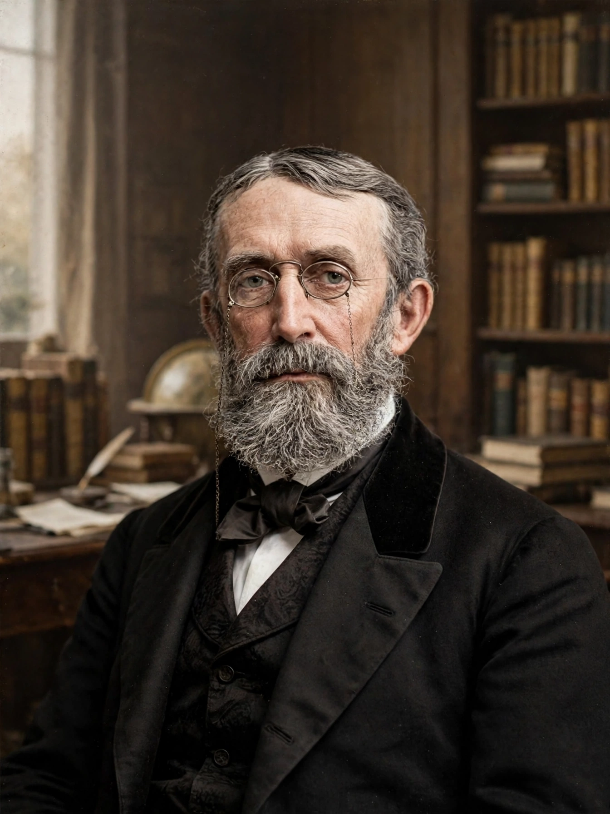

Andrew Dickson White (7 November 1832 – 4 November 1918) was an American historian and educator, best known as the co-founder of Cornell University, which he served as its first president, and for his two-volume work A History of the Warfare of Science with Theology in Christendom (1896).
| Andrew Dickson White | |
|---|---|
| Born | 7 November 1832, Homer, New York, US |
| Died | 4 November 1918 (aged 85), Ithaca, New York, US |
| Occupation | Historian, educator, diplomat |
| Known for | Co-founding Cornell University; its first president (1866–1885) |
As a New York state senator, White worked with Ezra Cornell, whose fortune from Western Union financed the new university chartered in 1865 under the Morrill Land-Grant Act. White envisioned a nonsectarian institution where any person could find instruction in any study, open to women and to students of all backgrounds. He served as president until 1885 and donated his large historical library to the university.
White served as United States minister to Germany (1879–1881), minister to Russia (1892–1894), and ambassador to Germany (1897–1902), and headed the American delegation to the Hague Peace Conference of 1899.
His History of the Warfare of Science with Theology popularised the "conflict thesis" — the view that science and religion have been locked in inevitable battle. Modern historians of science regard the thesis as oversimplified, though White's own argument was subtler than later versions, targeting dogmatic theology rather than religion itself.
Andrew Dickson White — recreated from memory.